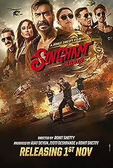
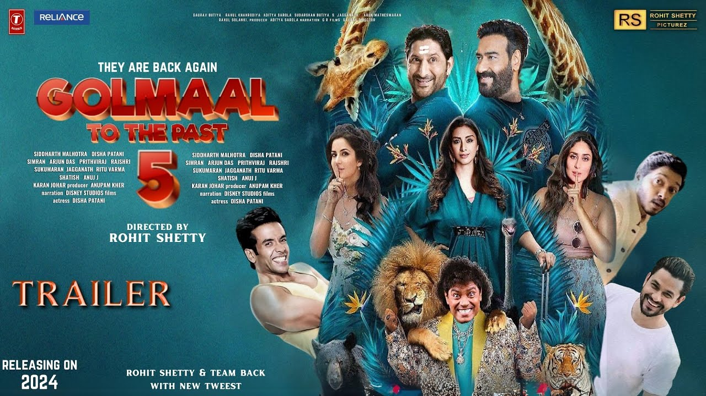

Rohit Shetty
 Indian filmmaker Rohit Shetty is well-known for his high-octane films with breath-takin action scenes and exciting storylines. Rohit is the son of Ratna, a young Hindi cinema artist, and late Hindi film stunt coordinator M.B. Shetty. He was raised alongside his four siblings, Kiran Shetty, Chaya Shetty, Uday Shetty as well as Hriday Shetty. When he was 17, he began his career in film as an assistant director on Kuku Kohli's Phool Aur Kaante (1991). He went on to assist him for several years after that and assisted him in films like Haqeeqat (1995) and Zulmi (1999). Following that, he went on to work with Ajay Devgn in the romantic comedy Pyaar To Hona Hi Tha (1998), the military movie Hindustan Ki Kasam (1999), and the comic film Raju Chacha (2000) in order to hone his craft. At the age of 30, Shetty directed his first movie, Zameen (2003)- the Ajay Devgn-starring action thriller was a financial success in Bollywood. His subsequent motion picture, Golmaal: Fun Unlimited (2006), was an immediate success with audiences- it garnered him a cult of devoted fans. One of the film's leading actors, Tusshar Kapoor, won his first IIFA Award for his performance as the mute child Lucky Gill. In 2008, he directed the comedy-drama Sunday (2008), which featured renowned stars like [;ink=nm1779702] and Ajay Devgn. Golmaal Returns (2008)' is the sequel of Golmaal: Fun Unlimited (2006), which was released in the same year, 2008. Shreyas Talpade and Kareena Kapoor were added to the cast for the movie's second part- it received both laudatory and scathing reviews but did rather well at the box office, grossing over Rs 720 million worldwide in its first week. 2010 saw the filming of both Golmaal 3 and the critically acclaimed action-film Singham (2011), in which Ajay Devgn starred as a police officer fighting injustice. There was universal acclaim for Singham (2011), a film that pays homage to action movies of the 1970s, and it was a huge financial success. Prakash Raj's portrayal of the villain Jaikant Shikre stood out, and the IIFA awarded him Best Performance in a Negative Performance. After the movie came out, it was praised for its great action scenes and acting. Up next for Shetty was the comedy-drama Bol Bachchan (2012), which starred Abhishek Bachchan and Ajay Devgn- the film was warmly received in India, and it fared well at the box office. He then went on to helm the film Chennai Express (2013), starring Shah Rukh Khan and Deepika Padukone, the following year. At its release, the film had become the highest-grossing Bollywood film in India and the third-highest-grossing Bollywood film worldwide. Shetty started his own production company, Rohit Shetty Productions, around 2014. Their filmography included the sequel Singham Returns (2014) and the blockbuster Dilwale (2015), the latter marked the much-anticipated reunion of Shah Rukh Khan and Kajol. Other renowned films that Shetty directed include the supernatural comedy Golmaal Again (2017) and the action comedy Simmba (2018)- Ranveer Singh, and Sara Ali Khan played the male and female leads in the second movie, respectively. Two more films followed this blockbuster, Sooryavanshi (2021) and Cirkus (2022). From 2009 to 2010, Shetty was a panelist on the TV show Comedy Circus (2018). He also hosted several seasons of the Indian version of Fear Factor (2017) And Still Continuing His Singham Again Movie Is A Blockbuster At Cinema Hall. His Upcoming Movies Include Golmaal 5,Simba 2 etc .
 Indian filmmaker Rohit Shetty is well-known for his high-octane films with breath-takin action scenes and exciting storylines. Rohit is the son of Ratna, a young Hindi cinema artist, and late Hindi film stunt coordinator M.B. Shetty. He was raised alongside his four siblings, Kiran Shetty, Chaya Shetty, Uday Shetty as well as Hriday Shetty. When he was 17, he began his career in film as an assistant director on Kuku Kohli's Phool Aur Kaante (1991). He went on to assist him for several years after that and assisted him in films like Haqeeqat (1995) and Zulmi (1999). Following that, he went on to work with Ajay Devgn in the romantic comedy Pyaar To Hona Hi Tha (1998), the military movie Hindustan Ki Kasam (1999), and the comic film Raju Chacha (2000) in order to hone his craft. At the age of 30, Shetty directed his first movie, Zameen (2003)- the Ajay Devgn-starring action thriller was a financial success in Bollywood. His subsequent motion picture, Golmaal: Fun Unlimited (2006), was an immediate success with audiences- it garnered him a cult of devoted fans. One of the film's leading actors, Tusshar Kapoor, won his first IIFA Award for his performance as the mute child Lucky Gill. In 2008, he directed the comedy-drama Sunday (2008), which featured renowned stars like [;ink=nm1779702] and Ajay Devgn. Golmaal Returns (2008)' is the sequel of Golmaal: Fun Unlimited (2006), which was released in the same year, 2008. Shreyas Talpade and Kareena Kapoor were added to the cast for the movie's second part- it received both laudatory and scathing reviews but did rather well at the box office, grossing over Rs 720 million worldwide in its first week. 2010 saw the filming of both Golmaal 3 and the critically acclaimed action-film Singham (2011), in which Ajay Devgn starred as a police officer fighting injustice. There was universal acclaim for Singham (2011), a film that pays homage to action movies of the 1970s, and it was a huge financial success. Prakash Raj's portrayal of the villain Jaikant Shikre stood out, and the IIFA awarded him Best Performance in a Negative Performance. After the movie came out, it was praised for its great action scenes and acting. Up next for Shetty was the comedy-drama Bol Bachchan (2012), which starred Abhishek Bachchan and Ajay Devgn- the film was warmly received in India, and it fared well at the box office. He then went on to helm the film Chennai Express (2013), starring Shah Rukh Khan and Deepika Padukone, the following year. At its release, the film had become the highest-grossing Bollywood film in India and the third-highest-grossing Bollywood film worldwide. Shetty started his own production company, Rohit Shetty Productions, around 2014. Their filmography included the sequel Singham Returns (2014) and the blockbuster Dilwale (2015), the latter marked the much-anticipated reunion of Shah Rukh Khan and Kajol. Other renowned films that Shetty directed include the supernatural comedy Golmaal Again (2017) and the action comedy Simmba (2018)- Ranveer Singh, and Sara Ali Khan played the male and female leads in the second movie, respectively. Two more films followed this blockbuster, Sooryavanshi (2021) and Cirkus (2022). From 2009 to 2010, Shetty was a panelist on the TV show Comedy Circus (2018). He also hosted several seasons of the Indian version of Fear Factor (2017) And Still Continuing His Singham Again Movie Is A Blockbuster At Cinema Hall. His Upcoming Movies Include Golmaal 5,Simba 2 etc .